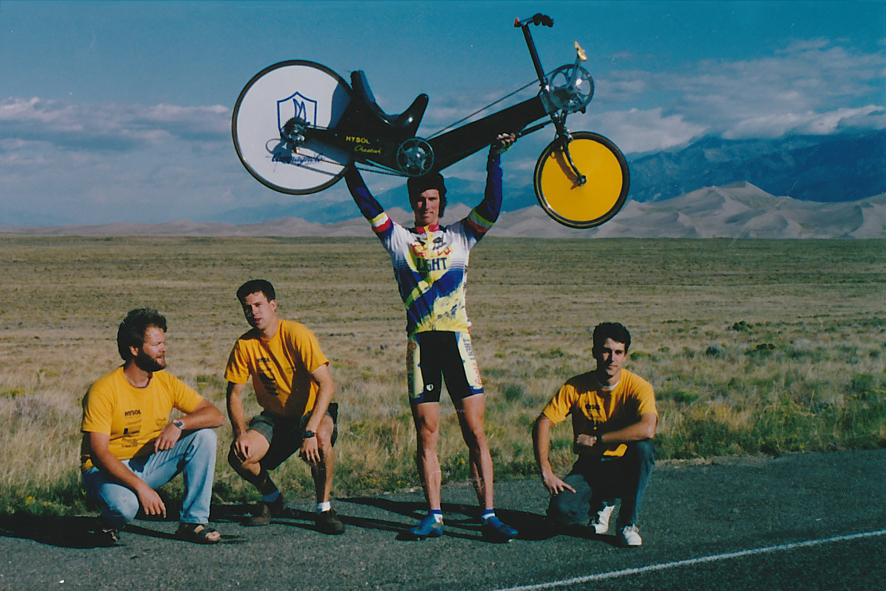
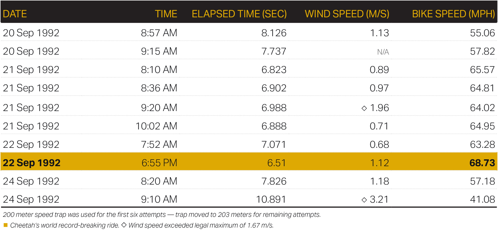
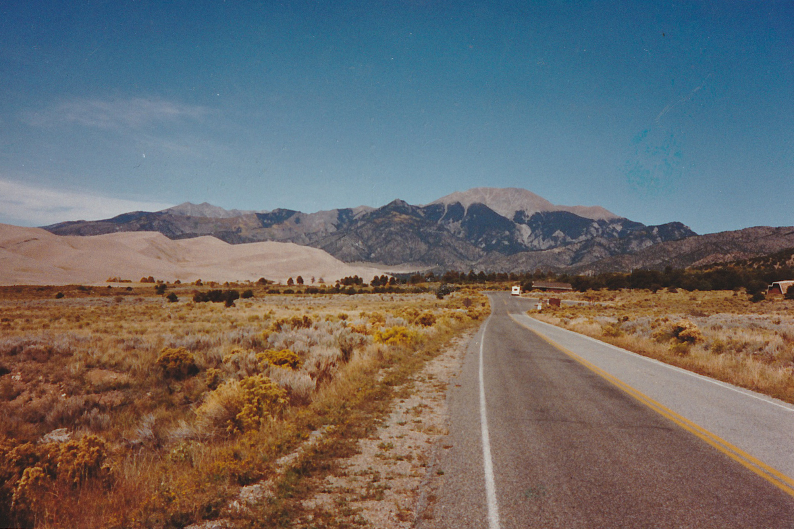
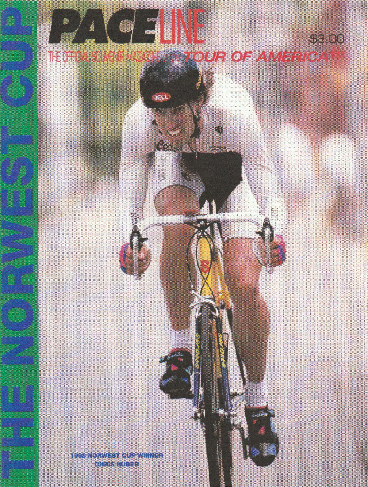

The record
On September 22, 1992 in Colorado's San Luis Valley, the Cheetah sprinted to an average speed of 68.73 MPH (110.68 kilometers per hour) setting a new world speed record for HPVs.

The top of the world
The Cheetah broke the world speed record for the 200 meter flying start event on September 22, 1992. This event allows a virtually unlimited run up to a 200 meter speed trap. At approximately 6:55 PM mountain standard time, Cyclist Chris Huber rode the Cheetah to an average speed of 68.73 mph through the speed trap.

Recorded times and speeds for the record-breaking ride.

1992 official IHPVA certificate for acknowledgement of new record.
The location
The course was on Six Mile Lane which is a flat road which crosses a Bison preserve in the San Luis valley, Colorado.

The cyclist
Profile on Chris Huber and how he came to be the rider
Words by ---.

Northwest Cup winner and Cheetah cyclist Chris Huber on the cover of Paceline, 1993.